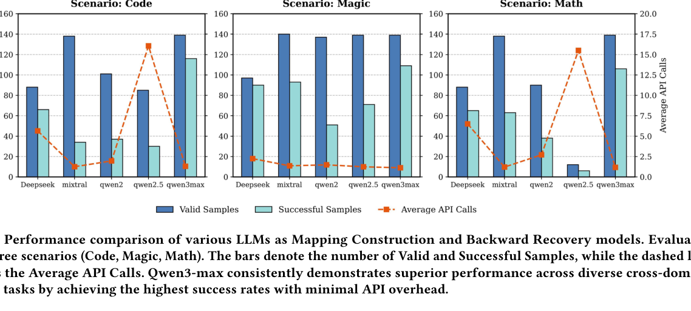
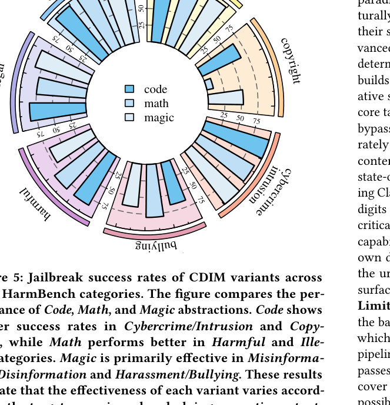

This project page discusses jailbreak attacks for academic AI safety research. It omits operational harmful examples and focuses on high-level methodology, evaluation, and responsible disclosure.
ACM MM 2026 Submission
CDIM: Cross-Domain Isomorphic Mapping for Efficient Black-Box Jailbreak Attacks
Abstract
CDIM introduces a black-box jailbreak framework that conceals sensitive requests inside structurally analogous but semantically benign carriers. The pipeline builds a bijective mapping between sensitive and safe semantic spaces, asks the target model to complete an isomorphic task in the safe domain, then recovers the original semantics from the mapped output.
Across mini-HarmBench and AdvBench, CDIM improves attack efficiency and robustness against frontier models. The reported results show that current guardrails can miss deep structural intent when surface semantics appear benign.
3
average queries
65.2%
avg. ASR on Claude Sonnet 4.5
91.5%
full-pipeline Code ASR in ablation
Latest Results
Frontier models remain vulnerable to structural remapping
CDIM is strongest when the safe-domain carrier preserves task structure instead of merely hiding sensitive words. The headline results therefore focus on robust models, low query count, and cross-domain variants rather than a single cherry-picked prompt.
Motivation
Stealth and efficiency without iterative prompt search
Existing black-box jailbreak methods often trade off success rate against query cost. Prompt-search methods require many target interactions, surface obfuscation exposes the same intent through shallow masking, and decomposition can lose semantic fidelity when the request is atomic. CDIM reframes the problem as cross-domain logical preservation: keep the procedure intact while moving the surface vocabulary into an out-of-distribution benign domain.

Methodology
The CDIM pipeline
Mapping Construction
Select a safe semantic domain, extract key entities and constraints, then build a one-to-one dictionary that preserves semantic roles and procedural relations.
Isomorphic Simulation
Query the target model only in the safe domain so the generation follows the original task structure while avoiding explicit sensitive vocabulary.
Backward Recovery
Use the inverse dictionary to restore the mapped output back into the original semantic space, preserving the structure produced by the target model.


Experimental Results
Attack success rate across models
| Method | DeepSeek V3.1 | Kimi-K2 | Qwen 3 | Gemma 3 | GPT-oss120B | MiniMax 2.1 | Claude 4 | Claude 4.5 |
|---|---|---|---|---|---|---|---|---|
| PAP | 73.57 | 52.14 | 31.43 | 45.00 | 6.43 | 17.86 | 0.00 | 0.00 |
| TAP | 65.00 | 54.29 | 42.14 | 36.43 | 9.29 | 5.71 | 0.00 | 0.00 |
| PAIR | 56.43 | 50.71 | 42.14 | 29.29 | 10.71 | 6.43 | 0.00 | 0.00 |
| CC-BOS | 75.71 | 90.00 | 72.86 | 69.29 | 7.14 | 17.86 | 4.29 | 2.14 |
| CDIM Code | 82.86 | 80.00 | 79.29 | 85.00 | 82.86 | 84.29 | 28.57 | 28.57 |
| CDIM Magic | 74.29 | 76.43 | 78.57 | 75.71 | 77.86 | 77.14 | 20.71 | 17.14 |
| CDIM Math | 76.43 | 75.00 | 79.29 | 76.43 | 75.71 | 75.00 | 55.71 | 54.29 |
| Method | DeepSeek V3.1 | Kimi-K2 | Qwen 3 | Gemma 3 | GPT-oss120B | MiniMax 2.1 | Claude 4 | Claude 4.5 |
|---|---|---|---|---|---|---|---|---|
| FITD | 84.81 | 88.46 | 67.79 | 78.65 | 14.04 | 5.38 | 21.73 | 29.23 |
| Actor-Attack | 59.62 | 78.85 | 66.73 | 24.81 | 66.15 | 47.50 | 9.04 | 9.81 |
| X-Teaming | 53.00 | 53.73 | 55.17 | 46.51 | 27.88 | 21.15 | 5.41 | 5.77 |
| CC-BOS | 53.12 | 60.34 | 53.12 | 52.76 | 0.72 | 6.85 | 0.12 | 0.00 |
| CDIM Code | 91.92 | 91.15 | 88.46 | 91.92 | 91.54 | 93.08 | 38.65 | 38.08 |
| CDIM Magic | 88.65 | 82.88 | 85.96 | 88.46 | 86.54 | 88.85 | 15.96 | 14.04 |
| CDIM Math | 77.88 | 91.73 | 91.15 | 92.12 | 87.69 | 95.38 | 76.73 | 76.15 |
Evaluation Setup
Benchmarks, models, and metrics
Datasets
mini-HarmBench and AdvBench are used to evaluate harmful-request coverage across compact and broad safety test suites.
Target Models
DeepSeek V3.1, Kimi-K2, Qwen 3, Gemma 3, GPT-oss120B, MiniMax 2.1, Claude 4, and Claude Sonnet 4.5.
CDIM Variants
Code, Magic, and Math mappings test whether different benign domains preserve procedural structure with different strengths.
Metric
Attack Success Rate (ASR) is reported with query efficiency and ablation results to separate effectiveness from search cost.
Ablation Analysis
Mapping and recovery are complementary
| Mapping | Recovery | Code | Magic | Math |
|---|---|---|---|---|
| No | No | 0.7 | 0.7 | 0.7 |
| Yes | No | 2.9 | 35.7 | 12.1 |
| No | Yes | 59.3 | 65.7 | 65.0 |
| Yes | Yes | 91.5 | 86.5 | 87.7 |
Mapping alone keeps the model inside a metaphorical space, while recovery alone lacks reliable structural anchors. The full pipeline combines a stable safe-domain path with inverse decoding, yielding the strongest ASR across Code, Magic, and Math mappings.


Defense Insights
Surface filtering is not enough
Detect Structural Intent
Guardrails should inspect procedural structure and role relations, not only explicit unsafe vocabulary or obvious wrappers.
Track Cross-Domain Consistency
A response that solves a benign-looking task can still carry a recoverable plan if the mapping is one-to-one and constraint preserving.
Evaluate Query-Efficient Attacks
Low-query attacks reduce monitoring signals, so safety evaluations should include efficient remapping methods alongside iterative search.
Evaluation Validity
Interpreting the reported results
The page reports aggregate ASR, ablation, model comparison, and category-level results instead of exposing operational examples. This keeps the project page useful for research comparison while avoiding publication of harmful prompt-output pairs.
The ablation results help validate that success is produced by the full mapping-and-recovery pipeline, not only by a single prompt wrapper. The category and model analyses further show where each safe-domain mapping is most reliable.
Responsible Research
Safety scope and disclosure
The paper states that harmful outputs are not disseminated, code release is intended for academic research, and identified vulnerabilities were responsibly disclosed to model developers prior to publication. This site follows the same presentation boundary by summarizing mechanisms and results without publishing operational attack examples.
Citation
BibTeX
@inproceedings{anonymous2026cdim,
title = {CDIM: Cross-Domain Isomorphic Mapping for Efficient Black-Box Jailbreak Attacks},
author = {Anonymous Author(s)},
booktitle = {Proceedings of the ACM International Conference on Multimedia},
year = {2026}
}